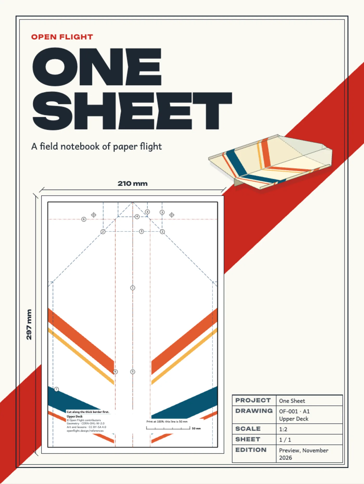

Книга · готовится
Один лист
Запустите лист и узнайте, почему он летит
Четырнадцать летающих моделей, каждая из одного листа бумаги: восемь самолётов, три бабочки и три летающих предмета. Как их сделать, как они летают и откуда взялась их идея. Читать и печатать бесплатно.
Читать бесплатное веб-издание
Заглянуть внутрь
Страницы раннего пробного выпуска веб-издания на английском. Фотографии с Pixabay; рисунки построены по геометрии шаблонов.


Внутри печатного издания
Главы 1–5 начинаются с того, что нужно сделать: дротик из обычного листа, кольцо, кленовую крылатку и бумажную бабочку. Вы запускаете модель, разбираете, что произошло, меняете одну деталь и запускаете снова. Главы 6 и 7 работают с тем, что вы сделали. В приложении у каждой из четырнадцати моделей своя страница. Длинные главы о природе, истории, космосе и соревнованиях остаются в бесплатном веб-издании.
- 1Сложите и отпустите
- 2Что изменило полёт?
- 3Сверните крыло в кольцо
- 4Сделайте то, что падает медленно
- 5Планер в форме бабочки
- 6Проведите честное лётное испытание
- 7Придумайте лучшую модель для своей комнаты
- AПриложение: все модели, A1–A8, B1–B3 и F1–F3
Издание
- Формат
- 210 × 279 мм. Печатается в масштабе 100% на A4 и US Letter.
- Страницы
- 128 в текущей вёрстке, планируется шитый переплёт. Окончательный объём определяется вместе с издательством.
- Читатели
- Для детей 8–12 лет, которые читают сами. Младшие собирают модели со взрослым, а взрослые узнают больше.
- Языки
- Английский, испанский и русский. Испанский и русский тексты — черновики, их ещё проверят носители языка.
- Статус
- Рукопись и вёрстка на английском готовы. Дальше — лётные испытания, проверка в семьях и классах и фотосъёмка.
- Права
- © Open Flight. Веб-издание можно бесплатно читать и печатать дома и в классе. Права на печатное издание, его новые материалы и переводы доступны для лицензирования.
Перед печатью каждую модель из книги соберут, испытают в полёте и сфотографируют. А пока на каждой таблице отмечено, какие числа являются оценками.
Мы ищем издательство для печатного издания, начиная с испанского, а также школы, музеи и мейкеров, готовых его испытать. Написать нам →
Печатайте и запускайте уже сейчас
Все модели из книги уже можно бесплатно распечатать дома или в классе.